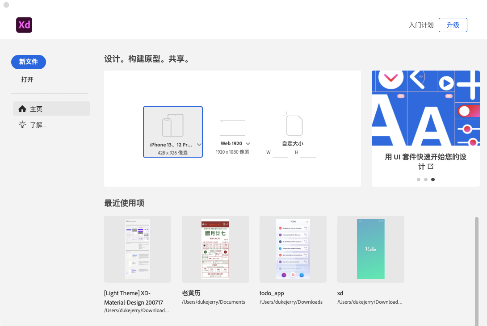
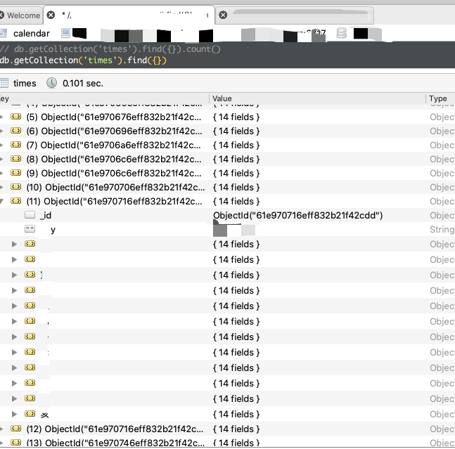

Preface
最近本来一直在做自己想做的app，然后发现开了头，没有了结尾。
仔细分析，发现是自己没有做好需求分析，项目规划，最致命的是没有做好原型设计，所以导致了最后的结果，虽然用Gitmind 做好了前期的记录，但是没有后续的整理和生成产品原型出来，导致现在只能暂时搁浅这个项目。然后突然发现年关将近，调研了一些市面上比较热门的万年历相关的信息，打算做一个万年历相关的 app。
现将目前的一些想法和心得记录于此。
Contents
1 原型设计相关
以前原型设计都是用的balsamiq mockups，非常不错的线稿原型设计工具，是之前做 Flash 开发的时候朋友推荐的。非常不错，但是现在收费了，囊中羞涩。最近看到adobe xd比较流行，个人版免费，自己之前用过不少的adobe系列软件，包括flash 也就是现在的adobe animation，所以对adobe系列软件的操作习惯比较习惯了。所以选择了他作为原型开发工具。
当然，目前只是做了很简单的原型设计，下一步需要根据官网上下载的 Material Design 风格和配色进行优化，很有可能还要用 Gimp 进行一些简单的ui设计和处理工作。

2 数据相关
数据爬取使用的是Python。原本打算用go来实现的，实际考察时使用的是 colly ，html解析是 goquery ，发现这个还是没有 python 使用 requests+beautifulsoup 来得简单和方便。
以下是数据爬取用到的库:
1 | name: somethinglikethis |
3 前端相关
前端使用的是flutter。
最近看了一些别人的教程，颇有心得，跟以前怎么整理好一个flutter项目犯难有了很大的区别。
界面堆起来也是顺畅多了。
目前还有一些边角功能需要开发，以及屏幕适配需要去做，整体还是很顺利的。
1 | intl: ^0.17.0 |
话说之前研究过 ionic ，试探性的去搜索了一下，还真有 ionic 的 iconfont。
项目简单，不知道会不会用到bloc或者getx。
4 服务端相关
本来是打算golang的，然后打算借朋友的服务器用用，朋友是java大佬。
golang肯定是够用的，但是今年一直都和朋友在正springboot全栈开发，所以打算系统的把springboot从0到1的整出来。
然而，这几天 *python** 爬取数据看来，python 是极好用的，所以，身为一个纠结狂魔，我不仅想：*要不，用python试试？
Problems
pymongo 遇到 _id 重复的问题
在数据存储方面，由于目前只是一些固定的数据，所以选择mongo来进行数据存储。对应的使用pymongo来操作mongodb。
1 | uri = "mongodb://%s:%s@%s" % ( |
此处为何会设置 document_class 为 RawBSONDocument 呢？
这是因为没有设置这个的时候，
系统会在 collection.insert_one 的时候判断插入的对象在不是RawBSONDocument并且没有 _id 字段的时候设置一个 _id ，
1 | if not (isinstance(document, RawBSONDocument) or "_id" in document): |
而 ObjectId 是极其规律的
An ObjectId is a 12-byte unique identifier consisting of:
- a 4-byte value representing the seconds since the Unix epoch,
- a 5-byte random value,
- a 3-byte counter, starting with a random value.
所以在使用多线程并发的情况下， ObjectId是很容易重复的。
因此，只要在此做此设置，就可以确保不会发生 _id 重复的问题。
并且，我们不需要这个字段，mongo自动生成的ObjectId够用了。
